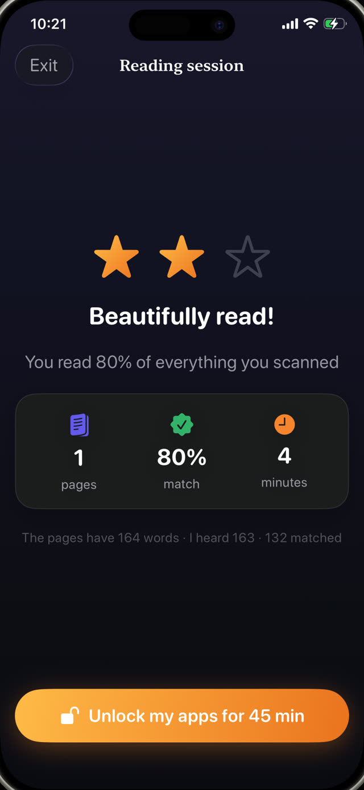

Everyone involved knows this happens. It is worth understanding what the log is actually for, because the answer changes how much effort is worth spending on it.


What the teacher is actually looking for
Not the titles, mostly. A reading log is a proxy for one question: is this child reading at home regularly? Thirty schoolchildren and one teacher means direct observation is impossible, so the log stands in for it.
Which means the useful signal is frequency and consistency, not literary merit. Twenty minutes on twelve separate evenings tells a teacher far more than four hours on a Saturday.
Why paper logs drift into fiction
- It is written after the fact, and human memory of last Tuesday's reading is close to worthless.
- It relies on the parent being present and free at the exact moment the reading happened.
- It is self-reported by the person being assessed, which is a problem in any measurement system.
- It records intentions as easily as facts, and nobody can tell the difference later.
What an honest log contains
If you are going to keep one, make it record things that cannot be reconstructed from memory:
- Date and time of each session, not just the day.
- How long it actually lasted, rather than how long it was meant to last.
- What was read: the book, and ideally the passage.
- Some evidence the reading happened, rather than a tick you wrote yourself.
Automating the record
The most reliable log is one nobody has to remember to fill in. If the record is a by-product of the reading itself, it cannot drift, cannot be back-filled, and does not depend on Sunday night honesty.
This also removes the awkwardness of a log that overstates things. A teacher who trusts the record can act on it; one who suspects it is decorative will ignore it, and then it was pointless work.
Exporting a PDF for the teacher
Guardian Reader keeps every reading session automatically: the date and time, the pages, the minutes, the match percentage, and the text your child actually read out loud.
Premium exports all of it as a PDF from the Progress tab, ready to email or print. It is a genuine record of at-home practice, generated from verified sessions rather than recalled at the last minute.
A record built from verified reading
Because each session is verified against the scanned pages as it happens, the log is not a claim about reading. It is a by-product of it. That distinction is the whole reason the export is worth handing to a school.
Reading unlocks the screen.
Free to download · No accounts, no tracking
Get Guardian Reader for iPhone